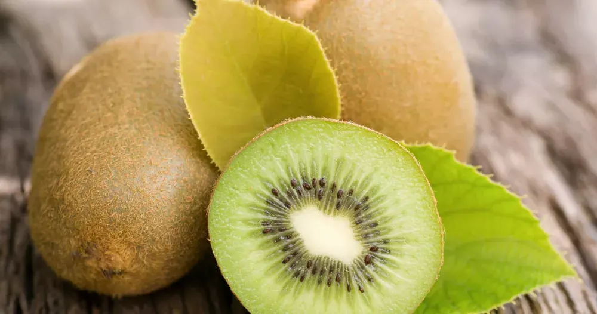

Sirop kiwi
En vert et contre tous.

Le kiwi
Un seul kiwi renferme une quantité impressionnante de fibres. Grâce aux antioxydants qu’il contient, le consommer régulièrement préviendrait l’apparition de maladies cardiovasculaires et de certains cancers.
Valeurs nutritionnelles et caloriques du kiwi
- Calories, 60,5
- Protéines: 0,88 g
- Glucides: 11 g
- Lipides: 0,6 g
- Fibres alimentaires: 2,4 g